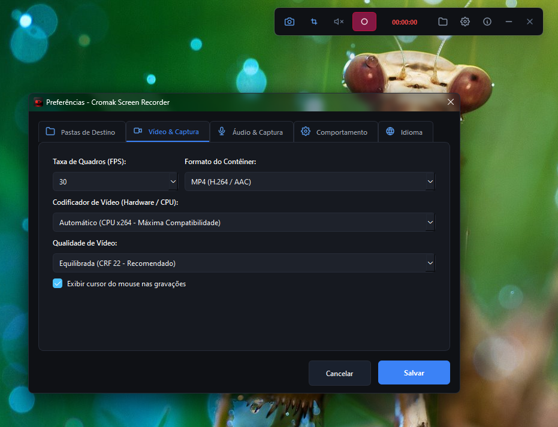
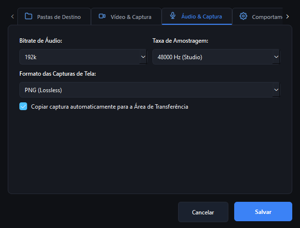

Cromak Screen Recorder
Studio-Grade 60 FPS Recording, Dual Audio & Captures Without Watermarks
Built on a bundled FFmpeg engine with a sleek PyQt6 floating bar. Record your full screen or any custom region with GPU acceleration (NVENC, QuickSync, AMF), capture Microphone + System Audio simultaneously, and take instant screenshots with automatic Clipboard copy.
Version: 1.1.4 (Build: 2026.11.4) • Native 64-bit Architecture • Webcam PiP & Live RTMP

Studio Engineering in a Lightweight Floating Bar
Everything you need to record tutorials, courses, meetings, gameplay, and commercial demos at maximum quality.
Floating Bar & System Tray
Independent compact bar that stays accessible on top or in the Windows System Tray, with quick F6 shortcut to start and stop recordings instantly.
GPU Acceleration (NVENC / QSV / AMF)
Record at 15, 24, 30, or 60 FPS using your NVIDIA, Intel, or AMD GPU with minimal CPU overhead and automatic fallback to libx264.
Simultaneous Dual Audio
Capture Microphone only, System Audio (Loopback) only, or both mixed simultaneously in AAC/Opus up to 320 kbps / 48 kHz.
Snipping Tool Area Selector
Dim the screen to crop any region with High-DPI accuracy, display a click-through blue border while recording, or pick 1080p, 720p, and 480p presets.
Screenshots & Auto-Clipboard
Save full-screen or cropped captures in PNG, JPG, or WEBP with automatic Clipboard copy for instant pasting via Ctrl+V.
Countdown & Discreet Mode
Enable a 3s or 5s countdown before recording, hide the floating bar during capture, and record into crash-safe MKV containers.
Zero Watermark · Permitted for Personal & Commercial Use
Unlike recorders that cut your videos at 5 minutes or stamp a giant logo on free exports, Cromak Screen Recorder v1.0.0 unlocks every pro feature for home users, YouTube creators, corporate training, and commercial teams:
Direct Comparison
See why Cromak Screen Recorder v1.0.0 outperforms both built-in Windows tools and restrictive paid recorders.
| Features & Freedom | Built-in Tool (Win 11) | Paid Recorders (Trial) | Cromak Screen Recorder v1.0.0 |
|---|---|---|---|
| Watermark & Time Limit | No watermark, basic options | Giant watermark & 5-min cap | Zero Watermark & Unlimited Time |
| GPU Encoding (NVENC / QSV / AMF) | No encoder or CRF control | Locked behind subscription | NVENC, QSV, AMF + CPU x264 Fallback |
| Dual Audio (Mic + System Audio) | Limited bitrate control | Pro tier only | Simultaneous Mixing up to 320 kbps / 48 kHz |
| Containers & Screenshots | MP4 and basic PNG only | Proprietary MP4 | MP4, MKV, WEBM + PNG/JPG/WEBP Clipboard |
| Commercial License & Privacy | Built into Windows | Expensive business licensing | 100% Free for Commercial & Private Use |
Interface Overview
Click any image to expand and inspect every detail of the Cromak interface.

Independent Floating Bar
Quick controls for Screenshot, Area, Audio, Record (F6), Folder, Preferences, and About always accessible on top.

Folders & Auto-Reveal
Configure custom directories for video recordings and screenshots with automatic Explorer highlight on finish.

Video, Container & GPU
Pick 15 to 60 FPS, MP4/MKV/WEBM containers, NVENC/QSV/AMF hardware encoding, and CRF 18, 22, or 26 quality.

Studio Audio & Screenshots
Up to 320k bitrate, 48 kHz sample rate, PNG/JPG/WEBP screenshots, and automatic Clipboard copy.

Countdown & Discreet Mode
3s or 5s countdown timer and option to hide the floating bar while recording via F6 or System Tray.

Commercial License & Online Sync
Clear freeware badge for personal and commercial use with built-in official update checks.
FFmpeg + PyQt6 Architecture
-
Direct gdigrab Capture & High-DPI Precision
Automatically converts logical selection coordinates into physical monitor pixels for razor-sharp recordings on 100%, 125%, 150%, and 4K displays.
-
Safe Recording & DirectShow Audio Mixing
Uses
amixto blend Microphone and System Audio without drift and closes MP4/MKV streams gracefully preserving themoovatom. -
%APPDATA% Persistence & Online Sync
Settings and rotating logs are stored in
%APPDATA%\Cromak Technology\Screen Recorderwith non-blocking version checks.
Privacy & Commercial License
100% local recording and screenshots. Zero invasive telemetry, no account required, and free for commercial use in businesses, agencies, and content creation.
System Compatibility & 11 Native Languages
Standalone installer with bundled FFmpeg. Switch between 11 languages live without restarting the application.
Download Now
Cromak Screen Recorder v1.0.0 is 100% free for personal and commercial use. You can support ongoing development if you wish.
Personal & Commercial Use
- Full v1.0.0 Software + FFmpeg
- Up to 60 FPS + NVENC / QSV / AMF
- Dual Audio (Mic + System Audio)
- Zero Watermark & Unlimited Time
- 11 Native Languages & Online Sync
Project Supporter
- The software is identical, but:
- You encourage new updates
- Helps keep the project and site alive
- Our eternal gratitude
Distributed with pride by Cromak Technology.